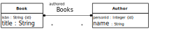

Understanding and Implementing Information Management Concepts and Techniques
Java Back-End Web App Tutorial Part 5: Managing Bidirectional Associations
Learn how to manage bidirectional associations between object types in a Java back-end web app, using Java Server Faces (JSF) as the user interface technology, the Java Persistence API (JPA) for object-to-storage mapping, and a MySQL database
Warning: This tutorial may still contain errors and may still be incomplete in certain respects. Please report any issue to Gerd Wagner at G[email protected] or Mircea Diaconescu at [email protected].
This tutorial is also available in the following formats: PDF. See also the project page, or run the example app from our server, or download it as a ZIP archive file.
Copyright © 2015-2018 Gerd Wagner, Mircea Diaconescu
This tutorial article, along with any associated source code, is licensed under The Code Project Open License (CPOL), implying that the associated code is provided "as-is", can be modified to create derivative works, can be redistributed, and can be used in commercial applications, but the article must not be distributed or republished without the authors' consent.
2018-06-25
| Revision History | ||
|---|---|---|
| Revision 0.3 | 20150724 | gw |
| improved entity class model | ||
| Revision 0.2 | 20150629 | gw |
| various revisions | ||
| Revision 0.1 | 20150510 | md |
| create first version | ||
Table of Contents
List of Figures
- 1.1. The Publisher-Book-Author information design model with two bidirectional associations
- 1.2. Turn a bidirectional one-to-one association into a master-slave pair of mutually inverse single-valued reference properties
- 1.3. Turn a bidirectional many-to-many association into a master-slave pair of mutually inverse multi-valued reference properties
- 1.4. The OO class model
- 2.1. The Java Entity class model
This tutorial is Part 5 of our series of six tutorials about model-based
development of back-end web applications with Java, using JPA and JSF. It shows how to build a
web app that takes care of the three object types Book, Publisher and
Author, as well as of the two bidirectional associations that assign a publisher
and (one or more) authors to a book and the inverse associations which assign books to authors
and to publishers .
A distributed web app is composed of at least two parts: a front-end part, which, at least, renders the user interface (UI) pages, and a back-end part, which, at least, takes care of persistent data storage. A back-end web app is a distributed web app where essentially all work is performed by the back-end component, including data validation and UI page creation, while the front-end only consists of a web browser's rendering of HTML-forms-based UI pages. Normally, a distributed web app can be accessed by multiple users, possibly at the same time, over HTTP connections.
In the case of a Java/JPA/JSF back-end app, the back-end part of the app can be executed by a server machine that runs a web server supporting the Java EE specifications Java Servlets, Java Expression Language (EL), JPA and JSF, such as the open source server Tomcat/TomEE.
The app supports the four standard data management operations (Create/Read/Update/Delete). It extends the unidirectional
association example app by adding code for handling the bidirectional
functional (many-to-one) association between Book and
Publisher, and the bidirectional non-functional
(many-to-many) association between Book and Author. The other parts of
the tutorial are:
Part 1: Building a minimal app.
Part 2: Handling constraint validation.
Part 3: Dealing with enumerations.
Part 4: Managing unidirectional associations, such as the associations between books and publishers, assigning a publisher to a book, and between books and authors, assigning authors to a book.
Part 6: Handling subtype (inheritance) relationships between object types.
Table of Contents
In OO modeling and programming, a bidirectional association is an association that is represented as a pair of mutually inverse reference properties, which allow `navigation´ (object access) in both directions.
The model shown in Figure 1.1 below (about publishers, books and their authors) serves as our running example in all other parts of the tutorial. Notice that it contains two bidirectional associations, as indicated by the ownership dots at both association ends.
For being able to easily retrieve the committees that are chaired or co-chaired by a club
member, we add two reference properties to our Committee-ClubMember example model: the property of a club member to be the chair of
a committee (ClubMember::chairedCommittee) and the property of a club
member to be the co-chair of a committee
(ClubMember::coChairedCommittee). We assume that any club member may
chair or co-chair at most one committee (where the disjunction is non-exclusive). So, we get the
following model:
Notice that there is a close correspondence between the two reference properties
Committee::chair and
ClubMember::chairedCommittee. They are the inverse of each other: when the club member
Tom is the chair of the budget committee, expressed by the tuple ("budget committee", "Tom"), then the budget committee is the committee chaired
by the club member Tom, expressed by the inverse tuple ("Tom", "budget
committee"). For expressing this inverse correspondence in the diagram, we append
an inverse property constraint, inverse of chair, in curly braces to the
declaration of the property ClubMember::chairedCommittee, and a
similar one to the property Committee::chair, as shown in the
following diagram:
Using the reference path notation of OOP languages, with c referencing a Committee object, we obtain the equation:
Or, the other way around, with m referencing a
ClubMember object, we obtain the equation:
Notice that when a property p2 is
the inverse of a property p1, this
implies that, the other way around, p1
is the inverse of p2. Therefore, when
we declare the property ClubMember::chairedCommittee to be the inverse
of Committee::chair, then, implicitly,
Committee::chair is the inverse of
ClubMember::chairedCommittee. We therefore call
Committee::chair and
ClubMember::chairedCommittee a pair of mutually inverse reference properties. Having such
a pair in a model implies redundancy because each of the two involved reference properties can be
derived from the other by inversion. This type of redundancy implies data
storage overhead and update overhead, which is the
price to pay for the bidirectional navigability that supports efficient object access in both
directions.
For maintaining the duplicate information of a mutually inverse reference property pair, it
is common to treat one of the two involved properties as the master, and the other one as the slave, and take
this distinction into consideration in the code of the change methods (such as the property
setters) of the affected model classes. We indicate the slave of an inverse reference property
pair in a model diagram by declaring the slave property to be a derived property using the UML notation of a slash
(/) as a prefix of the property name as shown in the following diagram:
The property chairedCommittee in ClubMember is now derived (as indicated by its slash prefix). Its annotation {inverse of
chair} defines a derivation rule according to which it
is derived by inverting the property Committee::chair.
There are two ways how to realize the derivation of a property: it may be derived on read via a read-time computation of its value, or it may be derived on update via an update-time computation performed whenever one of the variables in the derivation expression (typically, another property) changes its value. The latter case corresponds to a materialized view in a database. While a reference property that is derived on read may not guarantee efficient navigation, because the on-read computation may create unacceptable latencies, a reference property that is derived on update does provide efficient navigation.
When we designate an inverse reference property as derived by prefixing its name with a
slash (/), we indicate that it is derived on update. For instance, the property
/chairedCommittee in the example above is derived on update from the property
chair.
In the case of a derived reference property, we have to deal with life cycle dependencies between the affected model classes requiring special change management mechanisms based on the functionality type of the represented association (either one-to-one, many-to-one or many-to-many).
In our example of the derived inverse reference property
ClubMember::chairedCommittee, which is single-valued and optional,
this means that
whenever a new committee object is created (with a mandatory
chairassignment), the correspondingClubMember::chairedCommitteeproperty has to be assigned accordingly;whenever the
chairproperty is updated (that is, a new chair is assigned to a committee), the correspondingClubMember::chairedCommitteeproperty has to be unset for the club member who was the previous chair and set for the one being the new chair;whenever a committee object is destroyed, the corresponding
ClubMember::chairedCommitteeproperty has to be unset.
In the case of a derived inverse reference property that is multi-valued while its inverse
base property is single-valued (like Publisher::publishedBooks in
Figure 1.4 below being derived from
Book::publisher), the life cycle dependencies imply that
whenever a new 'base object' (such as a book) is created, the corresponding inverse property has to be updated by adding a reference to the new base object to its value set (like adding a reference to the new book object to
Publisher::publishedBooks);whenever the base property is updated (e.g., a new publisher is assigned to a book), the corresponding inverse property (in our example,
Publisher::publishedBooks) has to be updated as well by removing the old object reference from its value set and adding the new one;whenever a base object (such as a book) is destroyed, the corresponding inverse property has to be updated by removing the reference to the base object from its value set (like removing a reference to the book object to be destroyed from
Publisher::publishedBooks).
Notice that from a purely computational point of view, we are free to choose either of the
two mutually inverse reference properties (like Book::authors and
Author::authoredBooks) to be the master. However, in many cases,
associations represent asymmetrical ontological existence dependencies that dictate which of the
two mutually inverse reference properties is the master. For instance, the authorship association
between the classes Book and Author represents an ontological existence
dependency of books on their authors. A book existentially depends on its author(s), while an
author does not existentially depend on any of her books. Consequently, the corresponding object lifecycle dependency between Book and Author implies that their bidirectional association is maintained by maintaining Author references in Book::authors as the natural choice of master property, while Author::authoredBooks is the slave property, which is derived from Book::authors.
Since classical OO programming languages do not support explicit associations as first class citizens, but only classes with reference properties representing implicit associations, we have to eliminate all explicit associations for obtaining an OO class model.
The starting point of our association elimination procedure is an information design model with various kinds of unidirectional and bidirectional associations, such as the model shown in Figure 1.1 above. If the model still contains any non-directed associations, we first have to turn them into directed ones by making a decision on the ownership of their ends, which is typically based on navigability requirements.
Notice that both associations in the Publisher-Book-Author information design model, publisher-publishedBooks and authoredBooks-authors (or Authorship), are bidirectional as indicated by the ownership dots at both association ends. For eliminating all explicit associations from an information design model, we have to perform the following steps:
Eliminate unidirectional associations, connecting a source with a target class, by replacing them with a reference property in the source class such that the target class is its range.
Eliminate bidirectional associations by replacing them with a pair of mutually inverse reference properties.
A unidirectional association connecting a source with a target class is replaced with a corresponding reference property in its source class having the target class as its range. Its multiplicity is the same as the multiplicity of the target association end. Its name is the name of the association end, if there is any, otherwise it is set to the name of the target class (possibly pluralized, if the reference property is multi-valued).
A bidirectional association, such as the authorship association between the classes
Book and Author in the model shown in Figure 1.1 above, is replaced with a
pair of mutually inverse reference properties, such as Book::authors
and Author::authoredBooks. Since both reference properties represent
the same information (the same set of binary relationships), it's an option to consider one of
them being the "master" and the other one the "slave", which is derived from the master. We
discuss the two cases of a one-to-one and a many-to-many association
In the case of a bidirectional one-to-one association, this leads to a pair of mutually inverse single-valued reference properties, one in each of the two associated classes. Since both of them represent essentially the same information (the same collection of links/relationships), one has to choose which of them is considered the master property, such that the other one is the slave property, which is derived from the master property by inversion. In the class diagram, the slave property is designated as a derived property that is automatically updated whenever 1) a new master object is created, 2) the master reference property is updated, or 3) a master object is destroyed.
Figure 1.2. Turn a bidirectional one-to-one association into a master-slave pair of mutually inverse single-valued reference properties


A bidirectional many-to-many association is mapped to a pair of mutually inverse multi-valued reference properties, one in each of the two classes participating in the association. Again, in one of the two classes, the multi-valued reference property representing the (inverse) association is designated as a derived property that is automatically updated whenever the corresponding property in the other class (where the association is maintained) is updated.
Figure 1.3. Turn a bidirectional many-to-many association into a master-slave pair of mutually inverse multi-valued reference properties

After replacing both bidirectional associations with reference properties, we obtain the following OO class model:

Since books are entities that existentially depend on authors and possibly on publishers,
and not the other way around, it's natural to maintain the master references in book objects,
and consider the inverse references in publisher and author objects as derived (or slave) data.
Therefore, we define publishedBooks and authoredBooks as derived
inverse reference properties, which is indicated by their slash prefix in the OO class
model.
Table of Contents
In this chapter of our tutorial, we show
how to derive a Java Entity class model from an OO class model (that has been derived from an information design model),
how to code the Entity class model in the form of entity classes (representing model classes),
how to write the view and controller code based on the entity classes.
The starting point for making a Java Entity class model is an OO class model like the one shown in Figure 1.4 above. Notice that this model contains two bidirectional associations, each of them having two opposite association end dots corresponding to a pair of mutually inverse reference properties:
The first pair is
Book::publisherandPublisher::/publishedBooks.The second pair is
Book::authorsandAuthor::/authoredBooks.
We now show how to derive a Java Entity class model from the OO class model:
Turn each class into an
«Entity»class, making all properties private.Replace the platform-independent datatype names of the OO class model with corresponding Java datatype classes (Integer, Float, etc.).
Add a
«get/set»stereotype to all non-derived properties for indicating that they need getters and setters.Add a
«get»stereotype to all derived properties for indicating that they need getters, only.For any reference property, depending on the functionality type of the association represented by it, add a corresponding keyword as property modifier. For the given OO class model, add the following property modifiers:
oneToManyto the derived reference propertyPublisher::/publishedBooks,manyToOneto the reference propertyBook::publishermanyToManyto the reference propertyBook::authorsmanyToManyto the derived reference propertyAuthor::/authoredBooks
For any derived reference property designated as the inverse of another reference property, replace its {inverse of ...} property modifier with a corresponding {mappedBy="..."} property modifier.
Create the required property constraint check operations.
Create an add, and a remove operation for each multi-valued property.
This leads to the following Java Entity class model:
The Java Entity class model can be directly coded for getting the model layer code of our Java back-end app.
Compared to the unidirectional association app discussed in a previous tutorial, we have to deal with a number of new technical issues:
In the model code you now have to take care of maintaining the derived inverse reference properties by maintaining the derived (sets of) inverse references that form the values of a derived inverse reference property. This requires in particular that
whenever the value of a single-valued master reference property is initialized or updated with the help of a setter (such as assigning a reference to an
Publisherinstanceptob.publisherfor aBookinstanceb), an inverse reference has to be assigned or added to the corresponding value of the derived inverse reference property (such as addingbtop.publishedBooks); when the value of the master reference property is updated and the derived inverse reference property is multi-valued, then the obsolete inverse reference to the previous value of the single-valued master reference property has to be deleted;whenever the value of an optional single-valued master reference property is unset (e.g. by assigning
nulltob.publisherfor aBookinstanceb), the inverse reference has to be removed from the corresponding value of the derived inverse reference property (such as removingbfromp.publishedBooks), if the derived inverse reference property is multi-valued, otherwise the corresponding value of the derived inverse reference property has to be unset or updated;whenever a reference is added to the value of a multi-valued master reference property with the help of an add method (such as adding an
Authorreferenceatob.authorsfor aBookinstanceb), an inverse reference has to be assigned or added to the corresponding value of the derived inverse reference property (such as addingbtoa.authoredBooks);whenever a reference is removed from the value of a multi-valued master reference property with the help of a
removemethod (such as removing a reference to anAuthorinstanceafromb.authorsfor aBookinstanceb), the inverse reference has to be removed from the corresponding value of the derived inverse reference property (such as removingbfroma.authoredBooks), if the derived inverse reference property is multi-valued, otherwise the corresponding value of the derived inverse reference property has to be unset or updated;whenever an object with a single reference or with multiple references as the value of a master reference property is destroyed (e.g., when a
Bookinstancebwith a single referenceb.publisherto aPublisherinstancepis destroyed), the derived inverse references have to be removed first (e.g., by removingbfromp.publishedBooks).
Notice that when a new object is created with a single reference or with multiple references as the value of a master reference property (e.g., a new
Bookinstancebwith a single referenceb.publisher), its setter or add method will be invoked and will take care of creating the derived inverse references.In the UI code we can now exploit the inverse reference properties for more efficiently creating a list of inversely associated objects in the list objects use case. For instance, we can more efficiently create a list of all published books for each publisher.
Code each class of the Java Entity class model as a corresponding entity class.
Code an {id} property modifier with the JPA annotation
@IdCode any property modifier denoting the functionality type of a reference property, such as {manyToOne}, with the corresponding JPA annotation, such as
@ManyToOne.Code the integrity constraints specified in the model with the help of Java Bean Validation annotations (or custom validation annotations).
Code the getters and setters as well as the add and remove methods for multi-valued properties.
Code the
create,retrieve,updateanddeletestorage management operations as class-level methods.Take care of the inverse relation management in the
createandupdatemethods.
These steps are discussed in more detail in the following sections.
In the Publisher class, we add the publishedBooks property and we
use the @OneToMany annotation corresponding to @ManyToOne from the
Book class, representing the inverse relation:
@Entity public class Publisher { ... @OneToMany( fetch=FetchType.EAGER, mappedBy="publisher") private Set<Book> publishedBooks; ... }
The mappedBy parameter of the @OneToMany annotation of the
Publisher::publishedBooks property specifies the property that implements the
@ManyToOne relation in the Book
class:
@Entity public class Book { ... @ManyToOne( fetch=FetchType.EAGER) @JoinColumn( name="PUBLISHER_NAME") private Publisher publisher; ... }
In the Author class we add the authoredBooks property with the
@ManyToMany annotation corresponding to @ManyToMany
from the Book class representing the inverse
relation:
@Entity public class Author { ... @ManyToMany( fetch=FetchType.EAGER, mappedBy="authors") private Set<Book> authoredBooks; ... }
The mappedBy property of the @ManyToMany annotation for
authoredBooks property of the Author class specifies
the property name which implements the @ManyToMany relation in the
Book
class:
@Entity... public class Book { ... @ManyToMany( fetch=FetchType.EAGER) @JoinTable( name="books_authors", joinColumns = { @JoinColumn( name="BOOK_ISBN") }, inverseJoinColumns = { @JoinColumn( name="AUTHOR_PERSONID") }) private Set<Author> authors; ... }
We also use the @JoinTable annotation to specify the join table name for the
Many-To-Many relation and the corresponding
colum names for the join table, e.g., the table is books_authors and
the columns are named BOOK_ISBN and
AUTHOR_PERSONID.
Any setter for a reference property that is coupled to a derived inverse reference property
(implementing a bidirectional association), now also needs to assign/add/remove
inverse references to/from the corresponding value (set) of the inverse property. An
example of such a setter is the following setPublisher method:
public class Book { ... public void setPublisher( Publisher publisher) { // remove the book from the publishedBooks // of the old publisher (if not null) if ( this.publisher != null) { this.publisher.removePublishedBook( this); } // add the book to publishedBooks // of the new publisher (if not null) if ( publisher != null) { publisher.addPublishedBook( this); } this.publisher = publisher; } }
For any multi-valued reference property that is coupled to a derived inverse reference property, both the add and the remove method also have to assign/add/remove corresponding references to/from (the value set of) the inverse property.
For instance, for the multi-valued reference property Book::authors that is
coupled to the derived inverse reference property Author:authoredBooks for
implementing the bidirectional authorship association between Book and
Author, the addAuthor method is coded in the following way:
public class Book { ... public void addAuthor( Author author) { if ( this.authors == null) { this.authors = new HashSet<Author>(); } if ( !this.authors.contains( author)) { // add the new author reference this.authors.add( author); // add the derived inverse reference author.addAuthoredBook( this); } } }
For the remove operation removeAuthor we obtain the following code:
public class Book { ... public void removeAuthor( Author author) { if ( this.authors != null && author != null && this.authors.contains( author)) { // delete the author reference this.authors.remove( author); // delete the derived inverse reference author.removeAuthoredBook( this); } } }
Remember, for a Java Collection, such as Set or
List, the contains method compares two objects by using
the equals method of the objects. For example, for using the
contains method over a Set<Authors>, such as
publishedBooks, in the Author class we implement the
following equals method (two authors are equal if their
personId property values are equal):
public class Author {
...
@Override
public boolean equals( Object obj) {
if (obj instanceof Author) {
Author author = (Author) obj;
return ( this.personId.equals( author.personId));
} else return false;
}
...
}When a Book instance b, with a single reference
b.publisher to a Publisher instance p and
multiple references b.authors to Author instances, is
destroyed, the derived inverse references have to be removed first (e.g., by
removing b from p.publishedBooks). This is accomplished by
calling the set methods for the single and multi-valued properties with a
null parameter, e.g., b.setPublisher(null) and
b.setAuthors(null) within the Book.destroy
method:
public class Book { ... public static void destroy( EntityManager em, UserTransaction ut, String isbn) throws Exception { ut.begin(); Book b = em.find( Book.class, isbn); b.setPublisher( null); b.setAuthors( null); em.remove( b); ut.commit(); } }
In the same way, we have to take care of deleting the references with the Book
when deleting a Publisher or an Author
instance:
public class Author { ... public static void destroy( EntityManager em, UserTransaction ut, Integer personId) throws Exception { ut.begin(); Author a = em.find( Author.class, personId); a.setAuthoredBooks( null); em.remove( a); ut.commit(); } } public class Publisher { public static void destroy( EntityManager em, UserTransaction ut, String name) throws Exception { ut.begin(); Publisher p = em.find( Publisher.class, name); p.setPublishedBooks( null); em.remove( p); ut.commit(); } }
Unfortunately, JPA does not provide automatic maintenance of derived inverse references. According to the Java Persistence Wiki, we have to implement the (direct and inverse) relations management within set/add/remove methods: A common problem with bidirectional relationships is the application updates one side of the relationship, but the other side does not get updated, and becomes out of sync. In JPA, as in Java in general, it is the responsibility of the application or the object model to maintain relationships. If your application adds to one side of a relationship, then it must add to the other side. This is commonly resolved through add or set methods in the object model that handle both sides of the relationships, so the application code does not need to worry about it. There are two ways to go about this: you can either add the relationship maintenance code to only one side of the relationship, and only use the setter from that side (such as making the other side protected), or add it to both sides and ensure you avoid an infinite loop.
We have used for each controller class an entity manager. Every entity manager maintains a
set of cached entities which can be "shared" with other entity managers by using the
merge method. In our example code, as part of the create
and update static methods of each model class, we have to merge the
updated entities which belongs to another entity manager. For example, for the in
the case of Book.create method, we need to merge the
publisher (managed by the entity manager used by the
PublisherController class) and all the authors (managed by the
entity manager used by the AuthorController class) which were
referenced in the new Book
instance:
public class Book {
public static void create( EntityManager em, UserTransaction ut,
String isbn, String title, Integer year,
Publisher publisher, Set<Author> authors)
throws Exception {
ut.begin();
Book book = new Book( isbn, title, year, publisher, authors);
em.persist( book);
if ( publisher != null) {
em.merge( publisher);
}
if ( authors != null)
for ( Author a : authors) {
em.merge( a);
}
}
ut.commit();
}
}Without using merge, the publisher as well as all author instances
from the authors list, does not represents references to the originally
cached entities, and are not going to retain our changes, e.g., when needs to be
reused later with other Book instances. For more details, please check
the Java Persistence Documentation related to this matter.
It is also possible to disable the JPA caching, so the entities are reloaded from
database for every new instance, e.g., when EntityManager.find method
is called. This can be achieved by adding the following line in the
persistence.xml
file:
<property name = "eclipselink.cache.shared.default" value = "false"/>
The above configuration works for eclipselink impelementation and it
may be different for other API implementations. Notice that disabling entity caching
is not recommended without a serious reason, while it comes with performance loss
and may produce unpredicted behavior in some cases, such as using
@SessionScoped managed entities.
We can now exploit the derived inverse reference properties
Publisher::publishedBooks and Author::authoredBooks for more
efficiently creating a list of associated books in the list
publishers and list authors use cases.
For showing information about published books in the list
publishers use case, we can now exploit the derived inverse reference property
publishedBooks:
<ui:composition template="/WEB-INF/templates/page.xhtml">
<ui:define name="content">
<h:dataTable value="#{publisherController.publishers}" var="p">
...
<h:column>
<f:facet name="header">Published books</f:facet>
<h:outputText value="#{p.publishedBooks}" escape="false" converter="pl.m.converter.BookListConverter"/>
</h:column>
</h:dataTable>
<h:button value="Back" outcome="index" />
</ui:define>
</ui:composition>In the case of unidirectional associations, for the case of list
books use case, we have used a method in the Book model
class, i.e., getAuthorNames(), which returns a text containing the
comma separed author names of the
book:
public class Book {
...
public String getAuthorNames() {
String result = "";
int i = 0, n = 0;
if ( this.authors != null) {
n = this.authors.size();
for ( Author author : this.authors) {
result += author.getName();
if ( i < n - 1) {
result += ", ";
}
i++;
}
}
return result;
}
}This
makes sense in the case of a book, since the number of authors is in general limited
to a small number. However, a Publisher may have a large number of
published books. As a better alternative to our string serialization, we can use a
JSF converter class which allows us to present the list of authors in a custom way.
In our case, we choose to present it as list of names, where every name is presented
on a separat line. For this, we implement the
pl.m.converter.BookListConverter class and we annotate it with
@FacesConverter as
follows:
@FacesConverter( value = "pl.m.converter.BookListConverter") public class BookListConverter implements Converter { @Override public Object getAsObject( FacesContext context, UIComponent component, String value) { // no need for mapping to object... return null; } @Override public String getAsString( FacesContext context, UIComponent component, Object value) { String result = ""; int i = 0, n = 0; if ( value == null) { return null; } else if ( value instanceof Set<?>) { n = ((Set<Book>) value).size(); for ( Book b : (Set<Book>) value) { result += b.getTitle(); if ( i < n - 1) { result += "<br />"; } i++; } return result; } return null; } }
Then, we use the converter attribute in the facelet to specify that our
converter class, e.g., pl.m.converter.BookListConverter, has to be
used when the respective view component needs to be
rendered:
<h:column>
<f:facet name="header">Published books</f:facet>
<h:outputText value="#{p.publishedBooks}" escape="false" converter="pl.m.converter.BookListConverter"/>
</h:column>Since the serialization text contains HTML elements, i.e., <br /> to produce
HTML new lines, we have to specify the @escape =
"false" attribute, otherwise < and >
will be replaced with the corresponding < and
> entities.
The main advantage of using JSF converters is that we do not mix model code with view specific code, so our model classes remains clean and later, if we like to replace JSF with other framework, then our model class reamins unchanged, and we just need to take care of a corresponding converter for the new framework.
Running your application is simple. First stop (if
already started, otherwise skip this part) your Tomcat/TomEE server by using
bin/shutdown.bat for Windows OS or bin/shutdown.sh for Linux.
Next, download and unzip the ZIP archive file containing all the source code of the application and also the ANT
script file which you have to edit and modify the server.folder property value.
Now, execute the following command in your console or terminal: ant deploy
-Dappname=bidirectionalassociationapp. Last, start your Tomcat web server (by using
bin/startup.bat for Windows OS or bin/startup.sh for Linux).
Please be patient, this can take some time depending on the speed of your computer. It will be
ready when the console display the following info: INFO: Initializing Mojarra [some
library versions and paths are shonw here] for context '/bidirectionalassociationapp'. Finally,
open a web browser and type:
http://localhost:8080/bidirectionalassociationapp/faces/views/app/index.xhtml
You may want to download the ZIP archive containing all the dependency libaries, or run the unidirectional association app directly from our server.